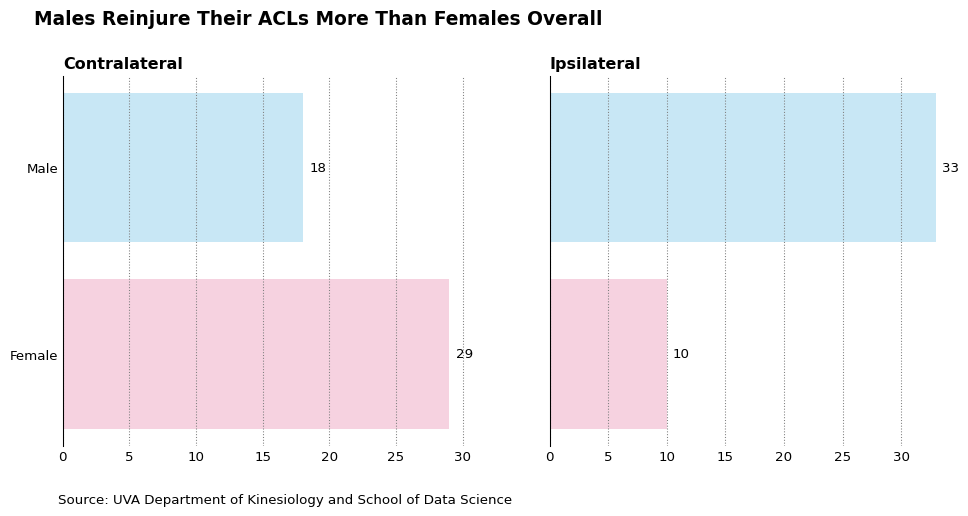

# == PLOT PREPARATION ==
# data for graphing (getting rid of NaN values):
df_clean = df[['ikdc', 'acl_rsi', 'sex_dashboard', 'tss_dashboard']].dropna()3 Data Visualization
3.1 Graph 1
# Filter by sex
df_male = df_clean[df_clean['sex_dashboard'] == 'Male']
df_female = df_clean[df_clean['sex_dashboard'] == 'Female']
# setting plot size:
plt.figure(figsize=(10, 6))
# male graph:
plt.scatter(df_male['ikdc'], df_male['acl_rsi'],
marker='x', label='Male', color='#0070BB', alpha=0.7, s=40)
# Plot females with square markers
plt.scatter(df_female['ikdc'], df_female['acl_rsi'],
marker='o', label='Female', color='#F653A6', alpha=0.5, s=40)
# == SCAFFOLDING ==
# setting titles:
plt.suptitle('Physical and Mental Recovery Go Hand in Hand', weight = 'bold', fontsize = 16, x = 0.39)
plt.title('Physical gains mirror mental gains in ACL Recovery Journey', color='#585757', fontsize = 12, x = 0.28)
plt.subplots_adjust(top = 0.905) # adjusting spacing between sub and main title
# setting x-axis and y-axis labels:
plt.xlabel('IKDC (Knee Function)', weight = 'bold', fontsize = 12)
plt.ylabel('ACL_RSI (Mental Readiness)', weight = 'bold', fontsize = 12)
# reducing clutter on the end of the x-axis:
plt.xticks(fontsize=10)
plt.yticks(fontsize=10)
plt.locator_params(axis='x', nbins=8) # reduces x-axis ticks
# extra formatting (removing spines for cleaner look):
plt.gca().spines['top'].set_visible(False)
plt.gca().spines['right'].set_visible(False)
plt.gca().spines['left'].set_visible(False)
# adding source as annotation:
plt.figtext(0.1, -0.05, 'Source: UVA Department of Kinesiology and School of Data Science', ha='left', fontsize=10)
plt.show()
3.2 Graph 2:
# setting font
georgia_font = font_manager.FontProperties(family='Georgia')
plt.rcParams['font.family'] = georgia_font.get_name()
df = df[['sex_dashboard', 'graft_dashboard2', 'reinjury', 'age', 'height_m', 'mass_kg', 'bmi', 'ikdc', 'acl_rsi']]
# cleaning reinjury variable
df = df[df['reinjury'].str.upper() != 'BLANK']
#proportion of patients with no reinjury
prop_noreinjury = df['reinjury'].value_counts(normalize=True).get('No', 0)
print(f"Proportion of patients with no reinjury: {prop_noreinjury:.2%}")
# cleaning dataframe
df['reinjury_shifted'] = df['reinjury'].shift(-1) #align reinjury with other values
df_cleaned = df[df['graft_dashboard2'].notna()][['graft_dashboard2', 'reinjury_shifted']] #get rid of na
df_cleaned.columns = ['graft_dashboard2', 'reinjury']
#get counts of graft and reinjury
counts = (
df_cleaned.groupby(['graft_dashboard2', 'reinjury'])
.size()
.reset_index(name='count')
)
#order of grafts
graft_order = ['Allograft', 'QT autograft', 'HS autograft', 'BTB autograft', 'Other']
counts['graft_dashboard2'] = pd.Categorical( #set order in counts
counts['graft_dashboard2'],
categories=graft_order,
ordered=True
)
total_per_graft = counts.groupby('graft_dashboard2')['count'].transform('sum') #get sums
counts['proportion'] = counts['count'] / total_per_graft #calculate proportions
# print(counts)
# print('No reinjury proportions by Graft type:\nAllograft: 0.83\nBTB autograft: 0.89\nHS autograft: 0.92\nQT autograft: 0.87\nOther: 0.84\n')
#get rid of no reinjury bar for readability
counts_noreinjury = counts[counts['reinjury'] != 'No']
#make grouped barplot
plt.figure(figsize=(10, 6))
sns.barplot(
data=counts_noreinjury,
x='graft_dashboard2',
y='proportion',
hue='reinjury',
palette='mako'
)
# graph labels and scaffolding
plt.xlabel('Graft Type')
plt.ylabel('Proportion of Reinjury Type')
plt.title('Undergoing ACLR Surgery? Consider a Hamstring (HS) Tendon Autograft', fontsize=14, weight='bold', loc='left') # Main title
plt.text(0.01, 0.98, 'Comparing Proportions of Reinjury Types Across Different Graft Types',
ha='left', va='center', transform=plt.gca().transAxes, fontsize=10, color='gray') # Subtitle
plt.legend(title='Reinjury Type', loc='upper left', bbox_to_anchor=(0.775, 1.0))
plt.text(-0.8, -0.02, 'Source: UVA Department of Kinesiology and School of Data Science', ha='left', fontsize=10)
sns.despine(top=True, right=True, left=True) #get rid of axes
plt.show()Proportion of patients with no reinjury: 87.47%3.3 Graph 3:
Looking at the relationship between different reinjuries between the sexes.
# small multiples bar chart
# Set font family to Georgia
georgia_font = font_manager.FontProperties(family='Georgia')
plt.rcParams['font.family'] = georgia_font.get_name()
# Records were mismatched so we shifted row values by 1
# (for every graft_type recorded, reinjury was blank so shifted by 1 to match)
m_df['reinjury_shifted'] = m_df['reinjury'].shift(-1)
df2 = m_df[m_df['sex_dashboard'].notna()][['sex_dashboard', 'reinjury_shifted']]
df2.columns = ['sex_dashboard', 'reinjury']
# print(df2.head()) # previewing cleaned dataset
df2 = df2[
(df2['reinjury'].str.upper() != 'BLANK') &
(df2['sex_dashboard'].str.upper() != 'BLANK')]
df2 = df2[df2['reinjury'].str.upper() != 'NO'] # dropping 'no' reinjury records
df2= df2[df2['reinjury'].str.upper() != 'BOTH'] # dropping 'both' reinjury records
grouped_counts2 = (
df2.groupby(['sex_dashboard', 'reinjury'])
.size()
.reset_index(name='count')
)
# Create sub-dataframes for Contralateral and Ipsilateral
df_contra = grouped_counts2[grouped_counts2['reinjury'] == 'Contralateral']
df_ipsi = grouped_counts2[grouped_counts2['reinjury'] == 'Ipsilateral']
# Set up 1x2 subplot grid
fig, axs = plt.subplots(1, 2, figsize=(12, 5), sharey=True)
# Title
fig.suptitle('Males Reinjure Their ACLs More Than Females Overall', fontsize=14, weight='bold', x=0.1, ha='left', y=1.02)
# Contralateral subplot
colors_contra = df_contra['sex_dashboard'].map({'Male': '#C8E7F5', 'Female': '#F6D2E0'}) # blue and pink
bars_contra = axs[0].barh(df_contra['sex_dashboard'], df_contra['count'], color=colors_contra)
axs[0].set_title('Contralateral', loc='left', weight='bold', color='black')
axs[0].grid(axis='x', linestyle=':', color='gray')
axs[0].spines['top'].set_visible(False)
axs[0].spines['right'].set_visible(False)
axs[0].spines['bottom'].set_visible(False)
axs[0].tick_params(axis='x', length=0)
axs[0].tick_params(axis='y', length=0)
for bar in bars_contra:
xval = bar.get_width()
axs[0].text(xval + 0.5, bar.get_y() + bar.get_height()/2,
round(xval), va='center', ha='left', fontsize=10)
# Ipsilateral subplot
colors_ipsi = df_ipsi['sex_dashboard'].map({'Male': '#C8E7F5', 'Female': '#F6D2E0'})
bars_ipsi = axs[1].barh(df_ipsi['sex_dashboard'], df_ipsi['count'], color=colors_ipsi)
axs[1].set_title('Ipsilateral', loc='left', weight='bold', color='black')
axs[1].grid(axis='x', linestyle=':', color='gray')
axs[1].spines['top'].set_visible(False)
axs[1].spines['right'].set_visible(False)
axs[1].spines['bottom'].set_visible(False)
axs[1].tick_params(axis='x', length=0)
axs[1].tick_params(axis='y', length=0)
for bar in bars_ipsi:
xval = bar.get_width()
axs[1].text(xval + 0.5, bar.get_y() + bar.get_height()/2,
round(xval), va='center', ha='left', fontsize=10)
# Final layout
plt.text(-42, -0.8, 'Source: UVA Department of Kinesiology and School of Data Science', ha='left', fontsize=10)
# plt.tight_layout()
plt.show()